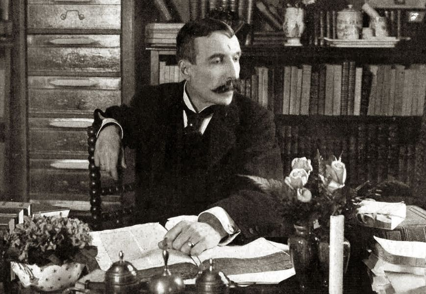

José Maria de Eça de Queiroz nasceu em 25 de novembro de 1845, na Póvoa de Varzim, Portugal, e faleceu em 16
de agosto de 1900, em Neuilly-sur-Seine, França. Formou-se em Direito na Universidade de Coimbra e iniciou
carreira como advogado, mas encontrou sua verdadeira vocação na literatura e no jornalismo . Foi também
diplomata, servindo em cidades como Havana, Newcastle, Bristol e Paris.
Entre suas obras mais importantes estão "O Crime do Padre Amaro" (1875), "O Primo Basílio" (1878) e "Os
Maias" (1888), nas quais criticou a sociedade portuguesa, o clero e os costumes urbanos com ironia e
realismo.
Eça de Queiroz é considerado um dos maiores escritores de língua portuguesa do século XIX, ao lado de
Machado de Assis, e sua obra permanece referência do Realismo literário em Portugal uesa do século XIX, ao
lado de Machado de Assis, e sua obra permanece referência do Realismo literário em Portugal .